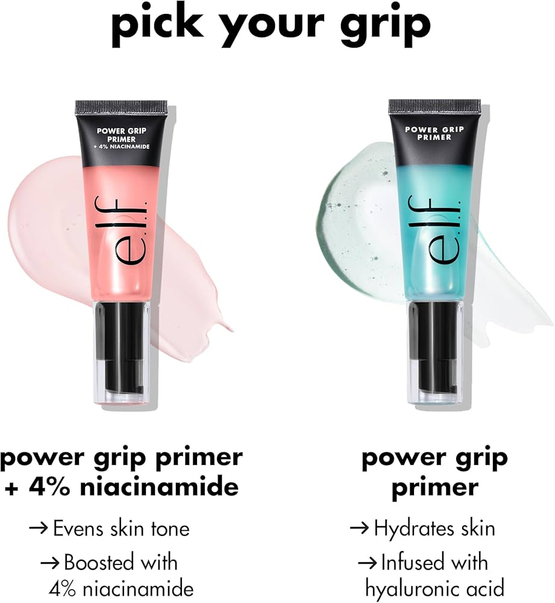
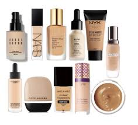
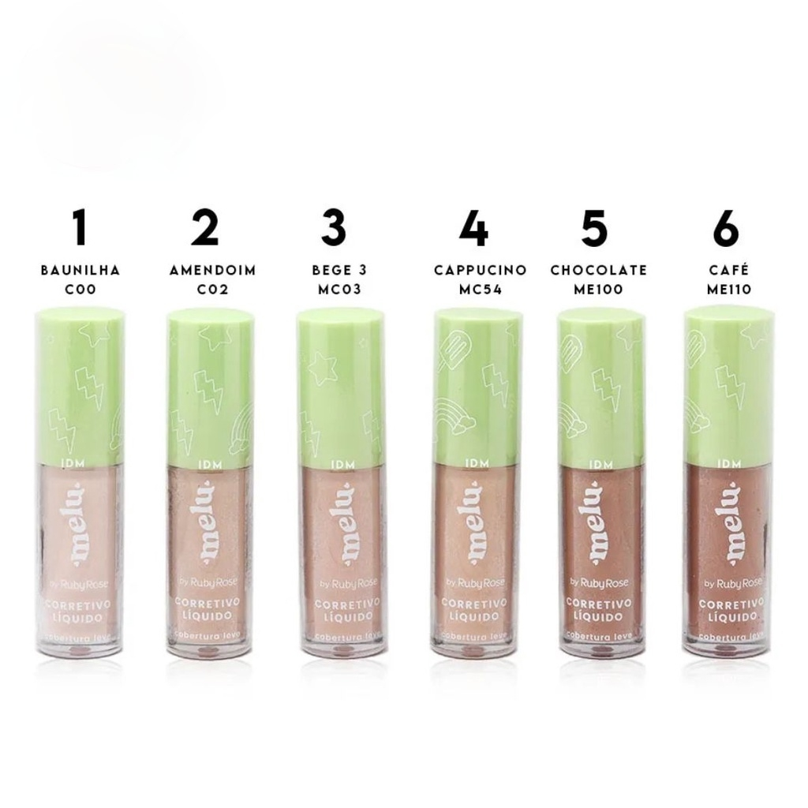
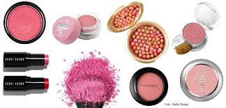
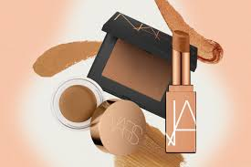

Make-up
Aquí damos consejos no solo de cómo maquillarse, sino también de qué productos son útiles. Estos son algunos de los productos básicos
Primer
Bases 
Corrector 
Rubor: en polvo, crema o líquido 
Bronzer: en polvo, crema o líquido 